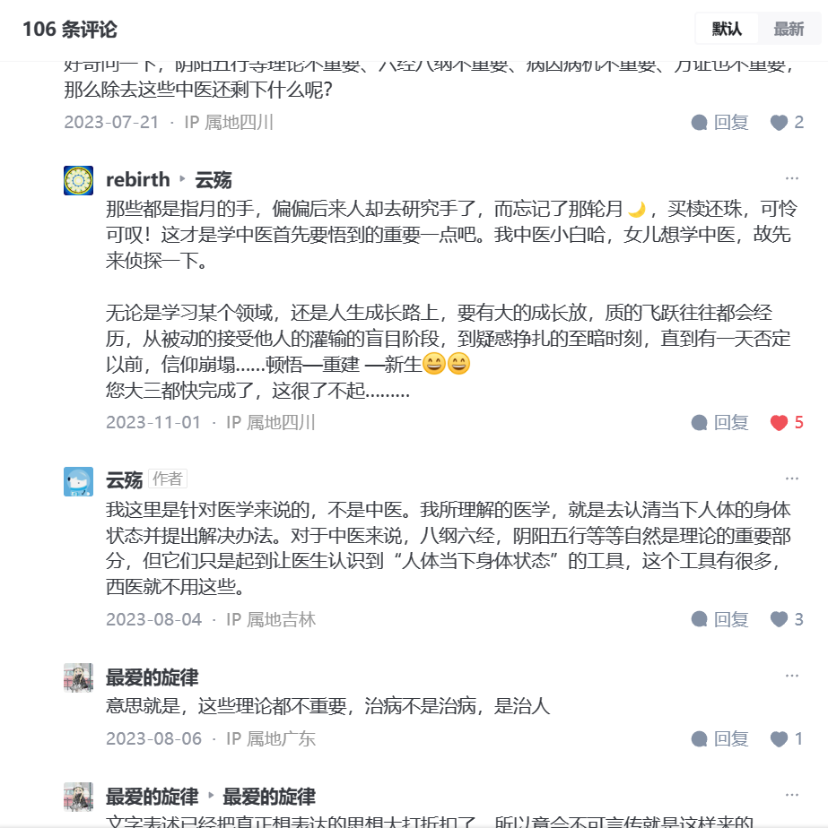

夏至矣*
当酉时刻，反顾过去。
1. 所见风光无限好
很想把它们做成我的知识库，不过第一步怎么走呢
1.1. 暗黑解读《西游记》
西游・黑神话 到底有功夫。查了许多内容，有一些部分是强为说辞，不过也基本前后连上，补充资料丰富
权力的游戏，阴阳内外的话术
道教内丹术、奇经八脉大小周天
作者是谦逊的姿态，总是在简介建议大家自己也去读读，只说是一家之言，姑妄听之，而且结合原著总是念原文，放原画，找到元杂剧，古籍资料，一直更新完结。这，实在是宝藏了。
真理的反面是另一个真理
1.2. 悟空
顺带关注了一下名声大噪的《黑神话悟空》以及《大闹天宫》。 逗比的预言家 全球第一个遇见BUG的UP，最倒霉的《黑神话》2024闭门会试玩感受
幽默积极，涉笔成趣；挖了足够料，讲了足够乐，最后升华够高。
【半佛】《黑神话：悟空》试玩体验，非常刺激 : 很久没看他的，因为感觉庸俗，但这个中肯实在，与上一个感性化不同，看出是非常希望发展起来
《黑神话：悟空》最终前瞻：就像谈了一场漫长的恋爱【印象】 ：我最先看得这个，虽然没有第一个那么有趣，但是因为真挚而动人
最后15 偶然看到的两条评论：
请各位牢牢记住大家现在天天期盼着激动又忐忑着的心情吧，因为以后不管国产游戏怎么发展我们应该都不会再有现在的心情了。如果发展的好我们会对国产有好游戏而麻木，发展的不好我们也只会叹息。现在这种满怀期待的心情真的不会再有了。
这番话很少有人说，曾经的我目睹央视直播杨利伟遨游太空，我是多么的激动，多么的喜悦，多么的振奋，现在我们都已经独自建造天宫了，变得毫无波澜，甚至没关注多少，这大概就是小甜甜变成了牛夫人吧
成就之后，一切都可以是通向伟大得前奏1
1.3. 数学简单速成——学习适合自己
crash course 的课程真的好，我想起了当年看数学建模学习也是浏览过课程，只不过当时没有动力看完。如今，发现举例说明非常清晰明白，总是直指要害：所有的检验都是一条法则
不需要讲具体原理可能使得课程进展方便，可以尽情用例子，甚至我感到她总是想举例子，一些穿插性较为显然得内容也用一个案例说明，其实没有必要。但许多案例挑选十分精当，比如狼来了故事，先后犯了I 错误（）她说明自由度时非常清楚
1.4. 唱法语歌
为什么学法语我已经不记得了，不过因为看了音乐剧而想继续学倒是如今一大助力。 我看了许多语音，但可能本身不是法语出身，因此发现这样一个滑稽的UP非常好，看完了唯一的 Les rois des mondes 他难能可贵讲了一些发音规律。而我收获最大的一点是，在跟读过程中，我意识到自己已经见过不少有这些组合得单词， qui qu'on
1.5. 总结棱镜的美国史 nonexport
兴盛有改变的勇气和创新的能力。 陷于盲目求增长得路线，精英也只会装聋作哑，获利自快。
历史不断地重新洗牌
没有最好的制度，只有流水不腐，因势变化
1.6. 又觅一处博客桃源
https://winsphinx.github.io/blog/categories/ Cogito, ergo sum plantuml -> 博客 ->
https://winsphinx.github.io/blog/categories/%E8%AF%AD%E8%A8%80/ 语言：我爱你你爱不爱我的语法结构。那些从前见过得性、格终于以我易懂得方式呈现了，喜不自禁。 https://winsphinx.github.io/blog/post/i-love-you-in-many-languages/
还是有法语看过多邻国有这个识语法的基础。 但进一步查查，发现法语稀奇古怪的时态语法。
我还破天荒仔细看看这个 语系图谱
里面还有读书记录，估计是站主用 org 计划顺带分享了。
这个不同于之前看到年轻人得博客，有种年轻过渡中年的兼探索和稳重
最后想想，如今，博客就像桃花源了。一般的只能到如果不想在喧嚣市井，大公众平台看变化杂耍偶然的惊喜，只能心愿如渔人偶然发现桃花源，毕竟，许多精品隐匿下次恐怕再也见不到了。
1.7. 克拉克森农场
完结了生活在继续 扮工人，看得我好快乐。
才过了几天，我发现自己已经默然无感了，当时看得甚是开怀，大解苦闷心胸，尤其意外居然找到没下架的资源，一次性将后几集全看完了。
可能那种乐在其中，为了目标不断努力，最吸引人吧，加 在农业自然中，应对自然变化与他人合作，成一种天真自足。
1.8. [知乎] 中医经验
背诵的基本功
思想不断改变，越发深邃。
好一篇洋洋洒洒的长文 云殇 中医 回答－非常喜欢中医学，但看了很多人的意见都不建议学，有些犹豫了，不知道要不要放弃?
原因或是小时候的一场大病，觉着自己的性命让别人把握，总归有些不踏实。曾经还做过一个梦，梦见自己得了绝症，被通知没多少日子活了，想着自己的生命全凭别人一句话，心里着实难受。这种命运被别人掌控的感觉，实在毫无安全感。
我非常庆幸我选择的是他的讲座原稿，而不是别人对其解释的记录。我直到现在才能体会到，条文解读只是对于条文多了一种理解，讲座是思想与思想的碰撞。这里可借用一段话，“大多自学者时常都会遇见的困难，是难以猜测文本著者的原始意图。这和坐在大学课堂里聆听专家教授直接面授所获得的东西，是不可同日而语的。正像语言学家索绪尔所说的：如果说‘言语’是对主体意识模仿的话，那么‘书面文字’就是模仿的模仿了”。读讲稿的思路是问题导向型的，不是各种流派著叙的简单罗列。从字里行间中，我们能感受到作者调动全部知识来衬托核心问题的能力。当时大二上学期还没有结束，但是从我翻开此书的几页便隐隐感受到这将是我思想的转折点。于是，在大二上学期的寒假我开始了思想上的洗礼。
之前我看的都是针灸经络，终于又一个真实得从药理来说的，再开我视野
作者：云殇 链接：https://www.zhihu.com/question/587274486/answer/3100705609 来源：知乎 著作权归作者所有。商业转载请联系作者获得授权，非商业转载请注明出处。
引出主题的“青蒿素”这一条便存在问题，它不能代表整个西医，尤其不能代表临床。非要定论，它只能作为药师而非医师。青蒿素背后所代表的是科研、是药师、而不是临床诊断的医师。在这方面，中西医有极大的差别。在病情诊断后，最后的处方药物是医师与药师共同确定，甚至在多数普通情况下，确定药物的人为药师而非医师。中医则不然，尤其经方医师，诊断即为治疗，两者是一体的。任何一个中医师其时都是西医临床医师与药师的结合。所以拿青蒿素去代表西医去和中医对比是没有意义的，这会使西医更远离“人”这一方面，相比于中医，背后的逻辑就显得极为单薄可笑。将它直接对比的人只能说明他对于西医的认识不够，西医临床医师（内科）在于识病诊断而非治疗。当西医临床医师已经诊断结束，剩下的药物治疗本质是由药师等科研工作者负责。也就是说，疾病确诊无疑后，疗效不好，错不在医师，因为市面上的药物疗效只有这些，根本责任在药师等人。而新药上市，解除了一大批为疾病所苦的患者，与医师也无太大关系，功在制药与用药的药师与药物研究人员。而这些制药人员从学科的根本性上并不能称之为医学，它们本质应属于化学，分子生物学等。如此看来，青蒿素研究成功与否与大众眼中为患者解除病痛的西医医生并无关联，他们不过是享有了这份服务、果实。中医则不然。中医学科即于其本身理论，中医无法像西医一样享受科技发展的成果。临床的诊断、治疗、包括病后护理、康复，对于传统中医来说都是一人处理，哪怕是现在，临床的诊断与治疗也是不可分割的，均为中医师一个职位处理，并无西医中药师等为其分担。严格来算，一位中医师所做的事情是西医师与药师合力所做。
偏生是要什么什么找不到——娄绍昆先生的《中医人生》
如果你想了解一个人，那就去读他的书吧
或许从此刻起，我开始真正有了目标，不再去在意旁人的眼光看法，只专注于自己能力是否真正有提升。在此之前，虽然在别人眼中我成绩不错，学习挺好，可实际上我自己的努力有时只是为了掩饰一些自卑。我总觉得我这一切能力和我自身没有太大关系，没什么天赋，不过阴差阳错，机缘巧和罢了。任何一个人有我这些经历，读过这些书都会如此，任至比我更好。当一个人站在高处时就更怕低谷的来临。由简入奢易，由奢入简难啊！我没有太多底气，只得多看书来寻求一种不被超越的安全感。因为我所比别人懂得多的，无非是看的书多点罢了。但是我很庆幸，我对于基础背诵的不放松，我认为这是我做的最对的一件事。拳打千遍，神灵自现。就以伤寒论条文来说，起码有个几百遍，原来不懂为什么，打心底里觉着枯燥无味，但冥冥之中不知为何，我还是坚持了下来，到了现在才懂曾经的辛苦没有白废，在读的某一刻的那灵光乍现，我终于有了属于我的东西。这些才是我的底气，没必要在意旁人的评价，走自己的路，每一个学期都能够感觉有巨大的提升，顿悟的那一刻的感觉才是真正的快乐。朝闻道，夕死可矣！
医者意也，这个意不应该是意思，更不应该是臆想，而是事物所展现的最本真，最朴素的现象，是抛却了众多理性概念思维的意。这种意是事物现象反映的本质，近乎与象。也就是说医者意也这句话本身是说医生看病本质是对病人所表现出来的各种症状、体征现象进行治疗。

1.9. 计算机原理
做的太细致，讲的很用心。 转载 计算机是如何工作的？探索主内存，以DDR5为例 国内也有，我看到一位 从0开始数 操作系统原理(合集) 非常棒，他还开发一个基于文稿得剪辑软件
2. 但愿是葛蔓常青
在讽刺中成就：我以为不要组长，便能安心舒畅，自在乐怡。 然而现在所需做一件多于一件，参与得多了，并没有因为把鸡蛋放在不同篮子里面而成功复利，反而如陷泥潭，许多事，
机缘未到，参透不到
偏是夏至我们要考试结束了。哈哈哈
常常心惊不安，明明为难皆过，明明可以享福得乐，却总是被我所控制不了的牵制。 今天走走，想到一学期都去雅思课度过，如今，结束了，失了一件。
问我何苦，何事不宁？我想到从前自己独自孤独，也是这般自我困苦，如今依然不得脱。心结怎解？似乎冲破桎梏就在一点一念，只是心神转不到这条 想来，是不敢放松，生怕放纵而没把时间放在重要得事情上，虚度光阴而堕落2，然而内心找不到价值所在，又常常觉得不适合，这不对口，那不成就，于是无愿无成。
昨日写不完，今天让我结束祂罢 https://www.zhihu.com/question/23832211/answer/2741986040 价值